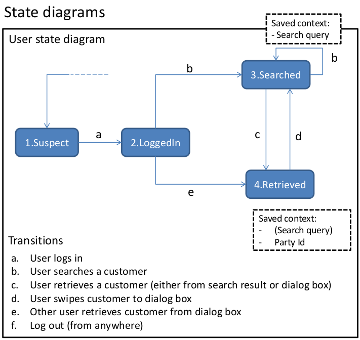
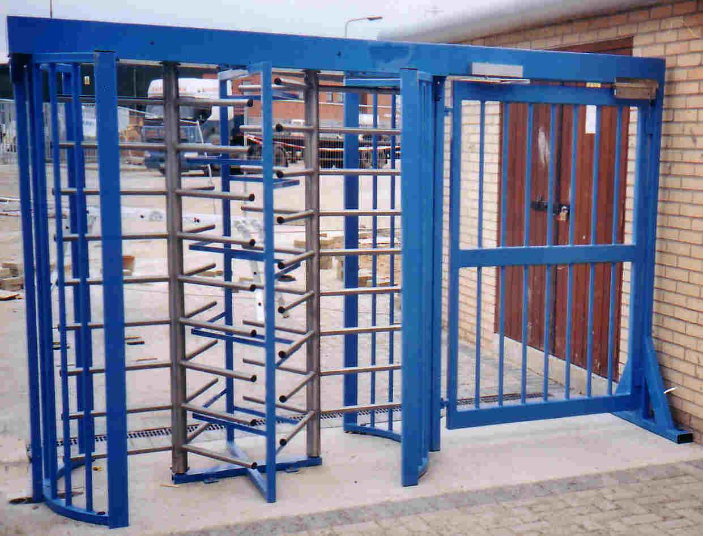
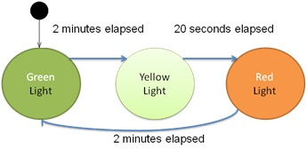
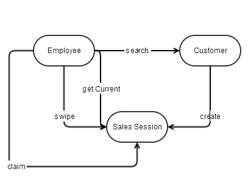
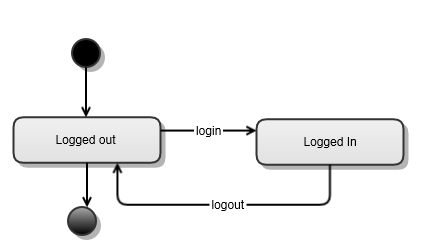
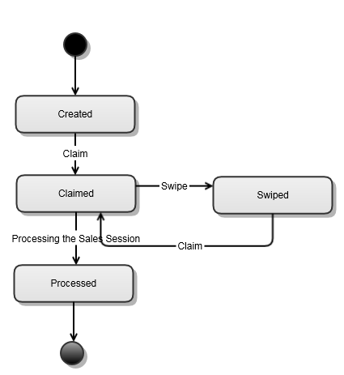
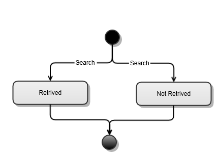

Hypermedia API
the Developer Journey
Saman Sattari Khavas saman.sattari.khavas@ing.nl
8 hour department wide hackathons
Our Goal
- Make an application with ability to persist state
- You can access the application from different devices and start from where you left off
- A backend with a finite state machine
A good case study for Hypermedia Api
How to create a Hypermedia API?
- Evaluate Business Processes
- Create State Machine
- Evaluate Media Types
- Create Media Type
- Implement
1. Evaluate Business Processes
- Employee ab12cd logs in
- Employee searches customer John Johnson
- Employee swipes John to the sales session (dialog box), so his colleague can take over
- Employee qr34st logs in
- Employee Checks the dialog box and claims John Johnson
2. Create State Machine
Definition
- It is conceived as an abstract machine that can be in one of a finite number of states.
- The machine is in only one state at a time.
- consists of :
- state
- transition Function
- Classic examples: traffic lights, vending machines and elevators
2. Create State Machine

State Machine of Turnstile Gate

State Machine of traffic light
2. Create State Machine
Steps to make Hypermedia API
- Evaluate Business Processes
- Define Resources
- Create State Machine
of resources
- Evaluate Media Types
- Create Media Type
- Implement
2. Define Resources

Steps to make Hypermedia API
- Evaluate Business Processes
- Define Resources
- Create State Machine of resources
- Evaluate Media Types
- Create Media Type
- Implement
3. State Machine of Employee

3. State Machine of SalesSession

3. State Machine of Customer

Steps to make Hypermedia API
- Evaluate Business Processes
- Define Resources
- Create State Machine of resources
- Evaluate Media Types
- Create Media Type
- Implement
4. Evaluate Media Types
- application/json
- need information about hyperMedia
- application/hal+json
- Too Complicated
{
"_links": {
"self": { "href": "/orders" },
"curies": [{ "name": "ea", "href": "http://example.com/docs/rels/{rel}", "templated": true }],
"next": { "href": "/orders?page=2" },
"ea:find": { "href": "/orders{?id}", "templated": true },
"ea:admin": [{
"href": "/admins/2",
"title": "Fred"
}, {
"href": "/admins/5",
"title": "Kate"
}]
},
"currentlyProcessing": 14,
"shippedToday": 20,
"_embedded": {
"ea:order": [{
"_links": {
"self": { "href": "/orders/123" },
"ea:basket": { "href": "/baskets/98712" },
"ea:customer": { "href": "/customers/7809" }
},
"total": 30.00,
"currency": "USD",
"status": "shipped"
}, {
"_links": {
"self": { "href": "/orders/124" },
"ea:basket": { "href": "/baskets/97213" },
"ea:customer": { "href": "/customers/12369" }
},
"total": 20.00,
"currency": "USD",
"status": "processing"
}]
}
}
Steps to make Hypermedia API
- Evaluate Business Processes
- Define Resources
- Create State Machine of resources
- Evaluate Media Types
- Create Media Type
- Implement
5. Create Media Type
{
"_links": {
"self": {
"href":"/"
}
},
"mysessions": [
{"href":"/salesessions/2"}
],
"generalsessions": [
{"href":"/salesessions/1/claim", "method": "POST"},
{"href":"/salesessions/3/claim", "method": "POST"}
],
"search": {
"href":"/customers",
"query": ["accountNumber", "firstName"]
}
}
6. Implementation
Recap
Steps to make Hypermedia API
- Evaluate Business Processes
- Define Resources
- Create State Machine of resources
- Evaluate Media Types
- Create Media Type
- Implement
technologies
team
- Yun Bei
- Rui Chen
- Saman Sattari Khavas
- Saurabh Joshi
- Satya Deeleep Bandaru
- Martijn van der Wijst
- Willem Veelenturf
- Folkert Schram de Jong
- Jasmin Jane Rengers-Gerritsen
- Erik Mons
- Chris aukema
- Helma Duyvestein